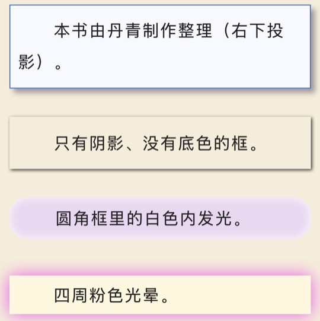
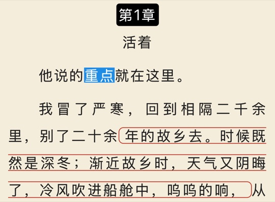
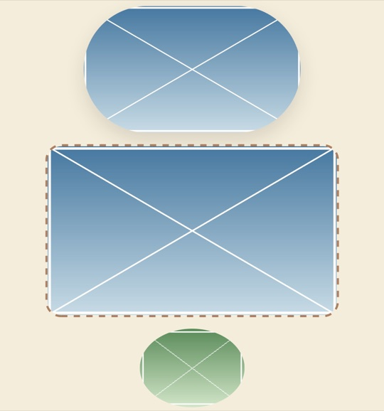

アップデート履歴
「まくらと本」の各バージョンで追加された機能と修正された問題です。
1.2
近日公開今回の注目ポイント
EPUB の組版を全面刷新
本に書かれたレイアウト——全面の背景画像、さまざまな枠、見出し、文字の装飾、注、リスト、縦書き——をできるだけ原書どおりに組むようになりました。ナイトでも読みやすく表示します。
閲覧エンジンを自動で更新
以前に読み込んだ EPUB は、開いたときに新しい組版ルールで一度だけ整え直します。読書位置、ブックマーク、傍線、メモはそのまま残ります。
章をまたぐページめくりがなめらかに
次の章を前もって組んでおくので、新しい章へ進むときに待たされません。本めくりでも章をまたいでめくれるようになりました（前に戻るときも同じです）。
ページ番号を紙の本と同じ数え方に
表紙、挿絵、制作情報のページもそれぞれ 1 ページと数えます。見開きでは左右のページにそれぞれ番号が付きます。
EPUB の組版を全面刷新
このバージョンでは EPUB の組版を見直しました。本のスタイルシートに書かれたレイアウトはできるだけ原書どおりに組み、本文の文字サイズ・行間・段落間隔・字下げはこれまでどおり「レイアウト」の設定に従います。本が独自にデザインした部分（見出し、詩、引用、枠、注）は本のとおりです。下のスクリーンショットは枕書のスタイルテスト用の本からのものです。
- 全面の背景画像と挿絵ページ：本がページ用にデザインした背景画像（ページ全体に敷く、小さな模様を並べる、ページの縁まで伸ばした枠）をそのまま表示し、暗い背景の上の白い文字も本のとおりです。全面の挿絵はそれだけで 1 ページになり、章タイトルやページ番号が重なりません。章の冒頭でページの端まで広げた挿絵は、画面の上端まで表示されます。

暗い背景の上の白い文字 
見出しの後ろの大きな画像 
ページの端に付いたラベル - 枠：本の枠を書かれたとおりに描きます——背景色、背景画像、角丸（四隅それぞれ）、実線・破線・点線・二重線の罫線（四辺それぞれ）、幅と中央揃え、高さが指定された枠はその高さで描きます。チャットの吹き出し、投稿の中のコメント枠、文字幅に合わせた小さなラベルも表示できます。

角丸の色付き枠 
チャットの吹き出し 
枠の中の枠 
二重線・破線・片側の太線 - 影：文字の影と枠の影（右下のドロップシャドウ、枠の内側の光、周囲のぼかし）を本のとおりに描きます。
文字の影 
枠の影 - 文中の背景色と罫線、ひとまとまりの会話枠：文の中の数文字にも背景色・罫線・角丸を付けられます（白抜きの章番号、数行にまたがる囲み文字など）。ひとまとまりで書かれた会話枠は、入りきれば「某々は言った：」に続けて、入らなければ枠ごと次の行に置き、ひとつの角丸の枠として描きます。

文中の背景色と罫線 会話枠 - 画像の角丸・罫線・影：本が挿絵に指定した角丸（丸いアイコンも含む）、罫線、影を描きます。

画像の角丸と罫線 - 見出しと文字：見出しは本に書かれた文字サイズ・太さ・色で組みます（以前はアプリ独自の見出しスタイルでした）。文字サイズのさまざまな書き方（x-large、smaller など）にも対応しました。斜体用の字形がない中国語・日本語のフォントでは文字を傾けて表示し、縦書きでも同じです。

見出しの階層 
文字サイズ 
中国語・日本語の斜体 - 下線・取り消し線・圏点：実線・二重線・点線・破線・波線と色は本のとおりです。圏点は横書きでは文字の上、縦書きでは文字の右に付きます。

下線と取り消し線 
圏点 - 詩、引用、リスト、区切り線：詩の中央揃え、折り返した行のぶら下げインデント、引用の左右の余白は本のとおりです。箇条書きの記号と番号（数字、アルファベット、ローマ数字）、区切り線も表示します。

詩 
リストと区切り線 - 注：注が本文と同じページにある本でも、注の記号をタップすると注のカードが開くようになりました。多看形式の注のアイコンは 1 文字分の高さで表示し、注の原文が本文の途中に残らなくなりました。

注の記号 - 縦書き：本全体が縦書きと明記されている本は、読み込むと自動で縦書きになります。縦書きの中の半角の括弧・引用符・ダッシュなどは縦書き用の向きに回して表示し、圏点や斜体も縦書きで表示します。

縦書きの括弧と記号 
縦書きの圏点 
縦書きの斜体 - ナイトでも読みやすく：本が指定した文字の色は暗い紙の上で自動的に明るくします。明るい枠は同じ色合いの暗い枠になり、中の文字もそれに合わせます。挿絵は暗い紙の上で少し暗くします。本が夜間に反転すると明記した線画は反転し、それ以外の画像は反転しません。

暗い紙の上の枠 
文字の色 
チャットの吹き出し - スタイルシートをより広く理解：よく使われるセレクタ（子要素、兄弟要素、属性、:first-child、:not など）、!important、条件付きのルール（@media、@supports）、文字の前後に付ける装飾（::before、::after）、パーセントで書いた行間、font の一括指定、画面幅で書かれた @media（常にスマートフォンの縦向きとして判断）に対応しました。本のスタイルと読書設定のどちらが優先されるかは、CSS のカスケードのルールで決まります。
- WebP 画像：WebP 形式の挿絵も表示できるようになりました。
- 動画：本に埋め込まれた動画は、再生マーク付きの表紙画像として表示し、タップすると全画面で再生します。読み上げ中は先に一時停止します。Apple のプレーヤーでは音声だけで映像が出ない種類の HEVC 動画は、読み込み時に自動で直して正しく再生できるようにしました。表紙画像のない動画は、本に用意された代わりの文章を表示します。
新機能
- 閲覧エンジンの更新：組版のルールが新しくなると、以前に読み込んだ EPUB は次に開いたときに一度だけ新しいルールで整え直します。画面には「閲覧エンジンを更新中」と進み具合、いま行っている手順が表示されます。終わると、読書位置、ブックマーク、傍線、メモ、書きかけのメモはそのまま残り、見出しで章を分け直した本も同じ形式でもう一度分けます。1.1 より前に読み込んだ本は元のファイルが保存されていないため、同じファイルをもう一度読み込むと元のファイルが加わり、次に開いたときに自動で更新されます。
改善
- 章の検出がより正確に：章タイトルに読点を含む本や、章タイトルのすぐ後に本文が続く本（ファイル変換時に改行が失われたもの）も、正しく章に分けられるようになりました。章タイトルの前後に飾りの記号がある本（「✦ 第1章 ✦」など）も認識し、本文をはさまずにタイトルが並ぶ目次ページを章と見なさなくなりました。読み込み済みの本は「目次」の「再検出」をタップしてください。
- 見出しパターンの選択肢が増加：「見出しパターンを選ぶ」に「タイトルに読点あり」と「行頭の番号」（「01. 風起」「一、風起」など）の 2 種類が加わり、本に実際に使われている書き方で表示されます。
- 再検出が速くなり、進み具合を表示：「章を再検出」を開くときや章の分け方を切り替えるときに進行バーを表示します。大きな本での検出時間はおよそ半分になりました。
- 章をまたぐページめくり：章の終わりが近づくと次の章をバックグラウンドで組んでおくので、横めくり・本めくりで新しい章へ進むときに待たされません。本めくりでは章をまたぐとき（前に戻る、見開き、挿絵ページを含む）もめくる動きになります。
- ページ番号：紙の本と同じように数え、表紙、挿絵、制作情報、部扉もそれぞれ 1 ページとします。見開きでは左右のページにそれぞれの番号を表示します。
- 読み込みの順番待ち：「＋」、ほかのアプリからの共有、Wi-Fi 転送で同時に何冊も届いたときは、順番に 1 冊ずつ読み込みます。Wi-Fi 転送の画面には、各本が順番待ち・読み込み中・完了・失敗のどれかを表示します。
不具合の修正
- 章のファイルが非常に多い本（1,000 章を超える合本の EPUB など）で「章を再検出」を開くと、アプリが強制終了する問題を修正しました。
- 挿絵の後や、前の行がちょうど行末まで埋まっているときに、次の段落の字下げがなくなる問題を修正しました。
- EPUB を見出しで章に分け直したとき、章の冒頭の挿絵が前の章の末尾に移ってしまう問題を修正しました。
- WebP 形式の挿絵のページが空白になる問題を修正しました。
- 注が本文と同じページにある本で、注の記号をタップしても反応しない問題を修正しました。
- アラビア語やヘブライ語のように右から左へ横書きする本に、縦書きが勧められる問題を修正しました。
- Wi-Fi 転送で同じ本をもう一度送ると、2 冊として読み込まれる問題を修正しました。
- Wi-Fi 転送で届いた本が多くなると、転送カードが画面からはみ出し、上が切れてスクロールもできなくなる問題を修正しました。
- 「最近読んだ本」カードとホーム画面ウィジェットの読書の進み具合が、本棚の一覧と 1% ずれる問題を修正しました。
- 書名に《》などの括弧がすでに付いている本で、メッセージの書名に括弧が重なって表示される問題を修正しました。
- 本のファイルが壊れて自動で修復されたとき、「章を再検出」で分けた章が本の目次に戻り、ブックマーク・傍線・メモが古い位置に戻ったり失われたりすることがある問題を修正しました。自動修復に失敗しても、まだ読めていた内容には影響しなくなりました。
- 読書画面がまれにタップに反応せず、メニューが出なくなる問題を修正しました。
- 本の中の検索を使った本を閉じても、メモリが解放されない問題を修正しました。
- ロック中やバックグラウンドで読み上げを聴いているとき、章を読み終えても次の章に進まない問題を修正しました。
- 読み上げ中、ロック画面のアートワークの四隅に白い縁が見える問題を修正しました。
1.1
2026 年 10 月 27 日今回の注目ポイント
傍線とメモ
気に入った一文に傍線を引いたりメモや写真を添えたりでき、書いたものはすべて「ノート」にまとまって、友だちに送れる共有用の画像も作れます。
選択して翻訳
外国語の文章を選んで「翻訳」をタップすると、アカウント不要で iPhone が端末上であなたの言語に翻訳します。
ホーム画面ウィジェット
読んでいる本と今日の読書時間をホーム画面に置けて、タップすればすぐに本へ戻れます。
カスタム表紙
自分の写真を本の表紙にでき、書名の位置・大きさ・揃え方も自由に決められます。
iPhone Duo に対応
内側の画面を横向きに持つと全画面に 2 ページが並んで開いた本のように読め、本棚・メニュー・カードも内側の画面の大きさに合わせて配置されます。外側の画面でも「マイページ」が全画面に広がり、ボタンはカメラの下に並びます。
マイページ
設定のいちばん上に、あなた自身のページ「マイページ」が加わりました。名前とアイコンを自分で変えられ、読書レベルが上がるとトロフィーがもらえて、ひとつを名前の横に飾れます。今週の「読書の足あと」も見られ、テーマは「海の底」「オーロラ」の 2 つから選べます。
新機能
- マイページ：設定のいちばん上の「マイページ」は、まくらと本でのあなた自身のページです。名前、アイコン、読書レベルとトロフィー、今週の「読書の足あと」が並びます。
- 名前とアイコン：名前はいつでも変えられます。アイコンは 3 つの折り紙アイコンから選ぶか、自分の写真を使えます。
- 2 つのテーマ：「海の底」と「オーロラ」。ヘッダーは動く画像で、ダークモードでは夜の景色に変わります。ヘッダーを左右にスワイプするとテーマが切り替わり、トロフィーもそのテーマのものになります。

海の底 
オーロラ - 読書レベルとトロフィー：日ごとの読書時間を積み上げて（1日60分まで）、36段階で上がります。テーマごとに 8 つのトロフィーがあり、Lv 1・5・10・15・20・25・30・36 でひとつずつもらえます。もらったトロフィーからひとつ選んで、レベルと一緒に名前の横に飾れます。読書ポスターにも入ります。海の底

クマノミ
Lv 1
フグ
Lv 5
クラゲ
Lv 10
ウミガメ
Lv 15
イルカ
Lv 20
マンタ
Lv 25
サメ
Lv 30
クジラ
Lv 36オーロラ
ホタル
Lv 1
もみじ
Lv 5
雪の結晶
Lv 10
雪の松
Lv 15
雪嶺
Lv 20
月
Lv 25
土星
Lv 30
天の川
Lv 36 - 友だちを招待：招待リンクを友だちに送ると、受け取った友だちの本棚に入れられる本が 10 冊増えます。友だちから受領コードが返ってくると、あなたの本棚も増えます（最初の 3 人でそれぞれ +10、+5、+5 冊）。
- 読書ポスター：読書レベル・トロフィー・読書時間・今週の足あとを 1 枚のポスターにして、友だちと共有できます。
- カスタム表紙：自分の写真で本の表紙を作れます。本棚で本を長押し →「表紙を変更」で「カスタム」の枠の「+」から写真を選び、切り抜いたあと、書名をドラッグして動かしたり、文字サイズや揃え方を調整したりできます。
- 表紙の共有画像：できあがった表紙を、表紙・書名・日付の入った 1 枚の画像にして友だちと共有できます。
- 読書背景をカスタマイズ：読書テーマに「カスタムテーマカラー」が加わり、カラーパレットから好きな色をページの背景にできます。文字の色は背景に合わせて濃い色か淡い色に自動で切り替わり、パレットには文字がはっきり読める色だけが並びます。
- EPUB の章を再検出：目次の大まかな EPUB も見出しから章を検出し直せて、「本の目次を使う」でいつでも元の目次に戻せます。
- 読み上げの生成待ち：進行バーに生成済みの範囲が表示され、まだ生成されていない位置へドラッグすると、音声ができるのを待ってからそこから再生します。
- 本棚の保存方法を刷新：本ごとに、元のファイル・読書の進み具合とメモ・レイアウト用のデータを分けて保存するようにし、問題が起きても直しやすくなりました。あわせて、読書や朗読を聴いた時間をこの端末の中だけで記録し始め、今後の読書統計に備えます。アップデート後に初めて開いたときに本棚を一度整理します。本が多いと少し時間がかかり、「ライブラリを整理中」と進み具合が表示されるので、まくらと本を閉じないでください。途中で中断しても、次に開いたときに続きから整理します。
- 元のファイルを保存：読み込み時に元のファイルを 1 部保存しておき、本文のファイルが壊れたときに自動で修復できます。
- ライブラリ診断：設定から本棚全体をチェックして、ファイルが不完全な本を見つけて対処できます。
- 先頭へ戻る：本棚を大きく下へスクロールすると右下にボタンが現れ、タップで先頭に戻れます。
- iPhone Duo のサイドにアイコン：iPhone Duo でステータスバーが画面の横に縦に並ぶとき（外側の画面、または内側の画面を横向きに持ったとき）、その列のいちばん下にあなたのアイコンが表示され、タップすると「マイページ」が直接開きます。
改善
- 読み上げへの追従がより正確に：ページめくりのモードで別の章へ移っても、読み上げている位置までページが戻るようになりました。
- 読み上げの開始がスムーズに：音声の処理をすべてバックグラウンドに移し、「聴く」を押したときに画面が一瞬止まることがなくなりました。
- 新しい声がすぐに使える：システムの設定で声をダウンロードまたは削除すると、アプリを開き直さなくても「まくらと本」に戻るだけで反映されます。
- 長い章の組版を表示：とても長い章を開くと「組版中」と進み具合が表示され、前の章の内容のまま止まって見えることがなくなりました。その間のページめくりは覚えておき、組版が終わるとめくります。
- 章の検出を強化：「1.」「三、」のような番号だけの章見出しも検出できるようになりました。
- 本の中の検索を高速化：1 つの章で多くの結果が見つかるときの検索が大幅に速くなりました。
- ワイド画面のレイアウト：iPad の横向きと iPhone Duo の内側の画面では、本棚左側の「最近読んだ本」が 2 列の大きな表紙になり、メニューやカードもウインドウの大きさに合わせて配置されます。
- デザインの統一：ボタン、カード、ポップアップの角の丸みと余白をそろえ、iOS 18 でも新しい iOS と同じ見た目になりました。
- iPad のポップアップを大きく：iPad では、設定・目次・本の情報などのポップアップが幅も高さも広がり、画面中央の小さな枠に収まらなくなりました。
- ポップアップの高さを内容に合わせる：Wi-Fi 転送、共有ポスター、読み上げの「音声」「音声をダウンロード」などのポップアップは内容に合わせた高さになり、内容が少ないときに大きな余白が残りません。
- EPUB の書名：本に書かれている書名をそのまま使い、書名が空のときや「Unknown」「無題」のような仮の名前のときだけファイル名を使うようになりました。
- ページをまたいで選択：スクロールモードと iPad 横向きの見開き表示で、長押しで選んだ範囲をページの継ぎ目を越えて広げられるようになりました。
- EPUB の挿絵の大きさ：挿絵を本に指定された大きさで表示し、小さなアイコンやプロフィール画像が 1 行いっぱいに広がらなくなりました。文中の小さなアイコンは文字の中に表示されます。読み込み済みの本は、読み込み直すと反映されます。
- 画面のレイアウトを固定：画面の文字がシステムの「さらに大きな文字」に連動しなくなってレイアウトが常に整い、読書画面の文字サイズはこれまでどおり自由に調整できます。
- 書庫の案内：「書庫」の説明が、端末に合わせて Face ID、Touch ID、または端末のパスコードを案内するようになりました。
不具合の修正
- iOS 18 で読み上げを開くとアプリが強制終了する問題を修正しました。
- EPUB の読み上げで、ハイライトされる文と読み上げ中の文が一致しない問題を修正しました。
- 読み上げの進行バーを末尾までドラッグすると、進み具合が止まり、音声とハイライトがずれる問題を修正しました。
- 読み上げのミニプレーヤーのボタンが押しにくく、誤ってページがめくれやすい問題を修正しました。
- 読み上げ中に章を再検出すると、ハイライトとページの追従が乱れる問題を修正しました（現在は読み上げを停止してお知らせします）。
- 「ウォーム / クール」を切り替えると、画面全体に何も表示されなくなる問題を修正しました。
- システムのダークモード / ライトモードが切り替わったとき、開いているポップアップが切り替わらない問題を修正しました。
- 紙色を明るい色と暗い色の間で切り替えたとき、一部の本で明るい背景に明るい文字や暗い背景に黒い文字で表示され、動作も重くなる問題を修正しました。
- 縦スクロールで、とても長い章がスクロールできない問題を修正しました。
- 縦書きの横スクロールで、すばやくスワイプすると広い範囲が空白になり、まれにアプリが強制終了する問題を修正しました。
- スクロールモードで、長押しすると 1 語しか選択できず、選択範囲をドラッグで広げられない問題を修正しました。
- 本めくりで文字が一瞬ぼやける問題を修正しました。
- iOS 18 の本めくりで、本文全体がずれて表示される問題を修正しました。
- 会話の吹き出しや枠付きの段落がページの下端で切れる問題を修正しました。
- スクロールモードで、ページをまたぐ会話の吹き出しがページの継ぎ目で途切れる問題を修正しました。
- 長押しで文字を選択するとき、ときどき数秒止まる問題を修正しました。
- txt の章を再検出したあと、読書位置とブックマークがずれる問題を修正しました。
- 本の中の検索が、まれに「検索中…」のまま止まる問題を修正しました。
- 複数の本をまとめて読み込んで本棚上限を超えたとき、メッセージが出ないまま、超えた分の本が読み込まれないことがある問題を修正しました。
- ブックマークや検索結果から移動したあと、とても短い前の章に戻ると、黄色の目印が関係のない場所に表示される問題を修正しました。
- iOS 27 で VoiceOver をオンにしていると、目次を開いたときにアプリが強制終了する問題を修正しました。
- 何冊か続けて読むと、メモリの使用量が増え続ける問題を修正しました。
- 読書統計の表紙が本棚の表紙と一致しない問題を修正しました。
1.0
2026 年 9 月 · 初回リリース本棚
- 本の読み込み：txt と EPUB に対応し、「ファイル」からの読み込み、ほかのアプリからの共有、Wi-Fi でのパソコンからの転送ができます。
- 章の検出：章と巻を自動で検出し、章の目印がない txt も章に分けられて、気に入らなければ別の形式で検出し直せます。
- お気に入り・アーカイブ・書庫：本を長押ししてお気に入りやアーカイブにしたり、Face ID または端末のパスコードで開く「書庫」に入れたりできます。
- 表紙の自動作成：表紙のない本には書名に合わせた手描きの背景が付き、表紙のスタイルはフラット・立体・切手の 3 種類から選べます。
- 全文検索：書名や著者だけでなく、本の中身まで検索できます。
- 読書アクティビティ：本棚を下に引くと、毎日の読書時間、連続して読んだ日数、1 日の目標の達成状況を確認できます。
読書
- 3 種類のページ送り：横めくり・縦スクロール・本めくりから選べて、自動ページ送りもできます。
- 縦書き：本ごとに縦書きに設定でき、ページ送り、スクロール、ブックマーク、読み上げのすべてに対応しています。
- フォントと組版：源ノ明朝、霞鶩文楷、資源圓體を内蔵し、文字サイズ・余白・字間・行間・段落間を調整できます。
- 中国語・日本語ならではの表示：EPUB のルビを表示したり “” を「」で表示したりでき、右開きの本では縦書きへの切り替えをおすすめします。
- EPUB とマンガ：EPUB のスタイルと挿絵を再現し、画像のマンガは 1 ページに 1 枚ずつ中央に表示します。
- ブックマークと進み具合：原文の位置で記録するので、文字サイズや組版を変えてもずれません。
- 読書テーマ：さまざまな紙色に加えて、自分の写真を読書の背景にできます。
- iPad の見開き：iPad を横向きにすると 2 ページが並び、本を開いたように読めます。
読み上げ
- オフライン読み上げ：システムの音声で読み上げるので通信なしでも聞けて、ページも声に合わせてめくれます。
- ロック画面と Dynamic Island：ロックしても再生が続き、ロック画面や Dynamic Island から操作できます。
- 読み上げの設定：速度の調整やタイマーでの停止ができ、本ごとに読み上げの言語と声を選べます。
外観とその他
- 4 つの表示言語：簡体字中国語、繁体字中国語、English、日本語をアプリの中で直接切り替えられます。
- ウォームとクール：2 つの基調色をワンタップで切り替えられ、8 種類のアプリアイコンと 7 種類のアクセントカラーも用意しています。
- アカウントなし・広告なし・トラッキングなし：本はあなたの端末の中にだけ保存されます。
アプリ内課金
- 本棚無制限：無料版は 5 冊まで入れられ、一度の購入で上限がずっと解除されます。
- コーヒー一杯分の応援：何度でもできる応援で、機能の解除はありません。
- コードを引き換える：App Store のオファーコードを使えます。